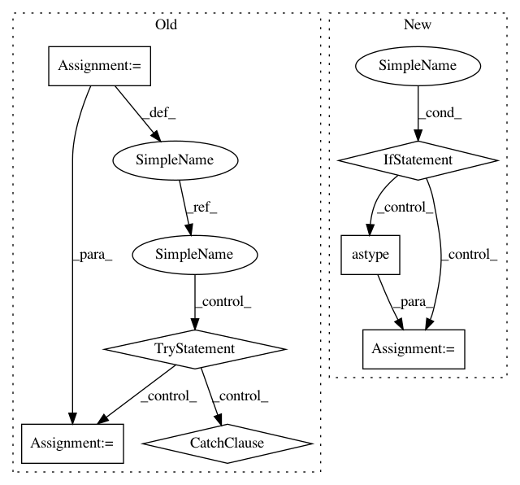

28f6dbec4bee2572fa7f94445d63cebb2de6dc9b,bin/tfr_hdf5.py,,read_tfr,#Any#Any#,93
Before Change
targets = []
with tf.Session() as sess:
next_datum = sess.run(next_op)
while next_datum:
seq_1hot = next_datum["sequence"].reshape((-1,4))
targets1 = next_datum["targets"].reshape(target_len,-1)
seqs_1hot.append(seq_1hot)
targets.append(targets1)
try:
next_datum = sess.run(next_op)
except tf.errors.OutOfRangeError:
next_datum = False
seqs_1hot = np.array(seqs_1hot)
targets = np.array(targets)
return seqs_1hot, targets
After Change
si = 0
for seq_1hot, targets1 in dataset:
// TEMP!
if si % 2 == 0:
seq_1hot = seq_1hot.numpy()[0].astype("uint8")
targets1 = targets1.numpy()[0].astype("float16")
seq_1hot = seq_1hot.reshape((-1,4))
targets1 = targets1.reshape((-1,num_targets))
seqs_1hot.append(seq_1hot)
targets.append(targets1)
si += 1
seqs_1hot = np.array(seqs_1hot, dtype="uint8")
targets = np.array(targets, dtype="float16")
In pattern: SUPERPATTERN
Frequency: 3
Non-data size: 7
Instances
Project Name: calico/basenji
Commit Name: 28f6dbec4bee2572fa7f94445d63cebb2de6dc9b
Time: 2019-09-27
Author: drk@calicolabs.com
File Name: bin/tfr_hdf5.py
Class Name:
Method Name: read_tfr
Project Name: EducationalTestingService/skll
Commit Name: ca10c185d94470054d693f19e7691523dbe3ec55
Time: 2019-03-05
Author: jbiggs@ets.org
File Name: skll/data/readers.py
Class Name: NDJReader
Method Name: _sub_read
Project Name: calico/basenji
Commit Name: 28f6dbec4bee2572fa7f94445d63cebb2de6dc9b
Time: 2019-09-27
Author: drk@calicolabs.com
File Name: bin/tfr_hdf5.py
Class Name:
Method Name: read_tfr
Project Name: deeptools/HiCExplorer
Commit Name: 42dcbde0e602cba7adb911a2072df3887afd61f4
Time: 2018-03-03
Author: wolffj@informatik.uni-freiburg.de
File Name: hicexplorer/utilities.py
Class Name:
Method Name: exp_obs_matrix_lieberman